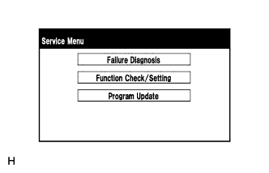
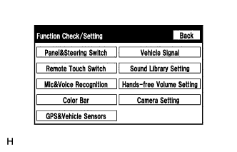
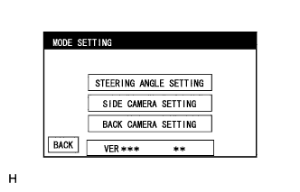
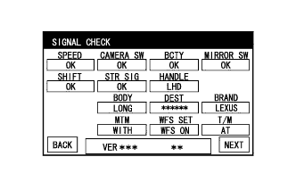
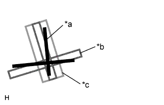
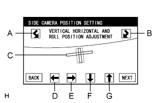
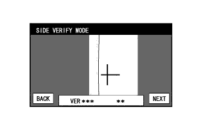
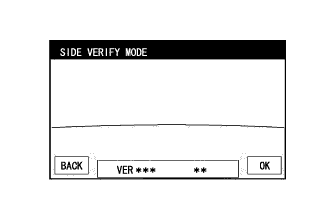

SIDE MONITOR SYSTEM (w/ Parking Assist Monitor System) > CALIBRATION |
| ADJUST SIDE MONITOR SYSTEM |
This side monitor system can be set from the diagnostic screen of the display and navigation module display.
If the following operations are performed, it is necessary to perform adjustments and checks on the diagnostic screen.
| Part Name | Operation | Adjustment Item | Proceed to |
| Spiral with sensor cable sub-assembly |
| Steering angle neutral point |
Click here
|
| Steering angle setting |
Click here
| ||
| Spiral with sensor cable sub-assembly | Replacement | Steering angle neutral point |
Click here
|
| Steering angle setting |
Click here
| ||
| Parking assist ECU | Replacement | Parking assist ECU initialization |
Click here
|
| Suspension, tires, etc. | The vehicle height changes because of suspension or tire replacement | Rear television camera optical axis (Camera position setting) |
Click here
|
| Side television camera optical axis (Camera position setting) | Side Camera Position Setting | ||
|
| Side television camera optical axis (Camera position setting) | Side Camera Position Setting |
| Outer rear view mirror assembly | Replacement | Side television camera optical axis (Camera position setting) | Side Camera Position Setting |
| SIDE CAMERA POSITION SETTING |
Preparation for adjustment
Park the vehicle with the steering wheel centered.
Set a target bar for optical axis adjustment of the front passenger side television camera assembly.
| A | B | C | D | E | F |
| 1183 mm (3.88 ft.) | 1181 mm (3.87 ft.) | 500 mm (1.64 ft.) | 500 mm (1.64 ft.) | 500 mm (1.64 ft.) | 180 mm (0.59 ft.) |
| *a | Target Bar for Side Camera Adjustment | *b | Front Wheel Axis |
| *c | Front Side | *d | Vehicle Center |
Start the diagnostic mode.
|  |
Select "Function Check/Setting" on the Service Menu screen.
|  |
Select "Camera Setting" on the Function Check/Setting screen.
|  |
Select "SIDE CAMERA SETTING" on the MODE SETTING screen.
|  |
Select "NEXT" on the SIGNAL CHECK screen.
|  |
SIDE CAMERA POSITION SETTING
| *a | Target Adjustment Bar for Side Camera Position Setting |
| *b | Red Frame |
| *c | Yellow Frame |
|  |
Perform the roll angle adjustment.
Use switches A and B to rotate C so that it is parallel to the target adjustment bar.
Perform the vertical and horizontal position adjustment.
Use the directional switches D, E, F and G to move C so that the target adjustment bar is centered in C.
Select "NEXT" to display SIDE VERIFY MODE.
|  |
SIDE VERIFY MODE for front passenger side
Check that the red cross and the target adjustment bar are aligned.
Select "NEXT" to store the side camera aiming adjustment value and change the screen to the STEERING ANGLE SETTING screen.
Check that the screen for the driver side camera displays correctly.
|  |
SIDE VERIFY MODE for driver side (w/ Multi-terrain Monitor)
Check the screen for the driver side camera according to the prompts on the screen.
Finish the diagnostic mode.